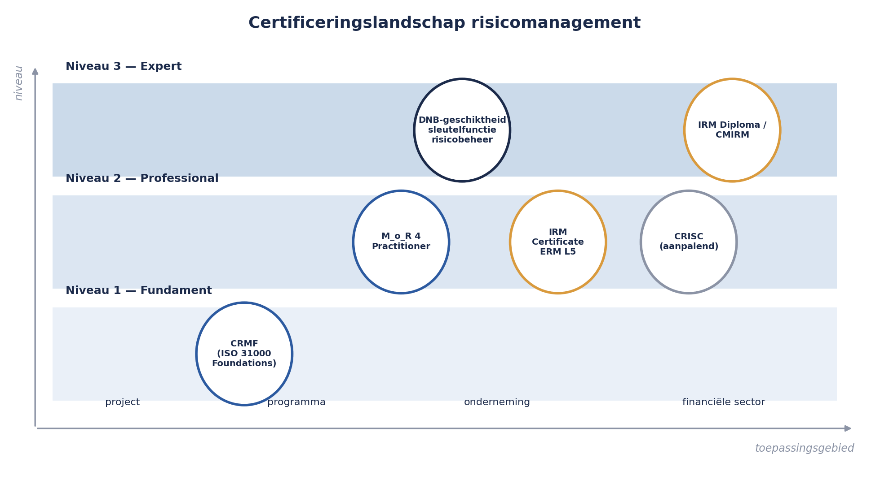

Deel 1 — Wat risico eigenlijk is
Niveau 1 — Fundament · Reader
1.0 Zevenenveertig regels
Op 14 maart, elf weken nadat het project WGP 2.0 was stopgezet, legde Sanne Bakhuis het risicoregister van dat project naast het eindrapport van de post-mortem. Het register telde zevenenveertig regels. Het eindrapport noemde drie oorzaken van het mislukken.
Geen van die drie stond in het register.
Wel stond er, op regel elf, een risico met de hoogste score van alle zevenenveertig: kans 5, impact 5, score 25, kleur rood. Het onderwerp: “Conversie deelnemersgegevens”. Het register vermeldde geen eigenaar, geen datum, geen maatregel en geen enkele wijziging sinds de eerste versie, veertien maanden eerder. Het rode vakje had veertien maanden lang rood gestaan en niemand had er iets mee gedaan.
Sanne Bakhuis is sinds vorige maand risicomanager bij Meridiaan Pensioen N.V. Voor die tijd was zij kwaliteitsmanager. De functie risicomanager bestond bij Meridiaan niet; die is ingesteld naar aanleiding van precies dit eindrapport. Haar eerste opdracht is de herstart van WGP 2.0 voorzien van risicomanagement dat wél werkt.
Deze cursus loopt langs haar schouder mee.

1.1 Waarom dit deel begint bij een definitie
Bijna iedereen die deze cursus volgt heeft al eens een risicoregister ingevuld. Dat is precies het probleem. Het woord “risico” wordt in organisaties zo vaak gebruikt dat de betekenis is opgerekt tot alles wat vervelend zou kunnen zijn, en daarmee is het als stuurinstrument onbruikbaar geworden.
De internationale richtlijn ISO 31000 hanteert één zin:
Risico is het effect van onzekerheid op het behalen van doelstellingen.
Die zin lijkt abstract en is dat niet. Er zitten drie harde gevolgen in verpakt, en alle drie zijn ze zichtbaar in het register van WGP 2.0.
Gevolg 1: geen doelstelling, geen risico
Een risico bestaat alleen ten opzichte van iets dat je wilt bereiken. “Uitval van een server” is op zichzelf geen risico; het is een gebeurtenis. Pas als er een doelstelling naast ligt — bijvoorbeeld: alle mutaties van werkgevers worden binnen vijf werkdagen verwerkt — kun je zeggen wát het effect is en hoe erg dat is.
Dit is de meest onderschatte zin uit de hele richtlijn. Registers die niet aan doelstellingen zijn gekoppeld, worden vanzelf lijsten met zorgen. Zorgen kun je delen, maar je kunt ze niet afwegen, en afwegen is waar risicomanagement voor bestaat.
In deel 3 bouwen we hierop verder onder de naam context en criteria bepalen.
Gevolg 2: effect is een afwijking, in twee richtingen
Een effect is een afwijking van het verwachte — positief of negatief. In de dagelijkse praktijk gaat het meestal over bedreigingen, maar de richtlijn, M_o_R en COSO benoemen alle drie uitdrukkelijk ook kansen. In deel 6 krijgen kansen een eigen set responsstrategieën.
Wees hier eerlijk over de praktijk: in de meeste organisaties is het kansengedeelte van risicomanagement een dode letter. Dat is jammer maar het is geen ramp. Wat wél een ramp is, is dat de eenzijdige focus op bedreigingen risicomanagement de reputatie van remlicht geeft, terwijl het vak juist bestaat om besluiten mogelijk te maken die je anders niet zou durven nemen.
Gevolg 3: onzekerheid, dus toekomst
Een risico kan gebeuren. Iets dat al gebeurd is, is geen risico meer. Dat klinkt triviaal tot je een willekeurig register openslaat en ziet dat de helft van de regels beschrijft wat er al aan de hand is. Die verwarring kost meer besluitvormingstijd dan welke andere fout ook, en daarom staat het onderscheid in de volgende paragraaf.
1.2 Vijf woorden uit elkaar houden
| Begrip | Kenmerk | Wie handelt | Voorbeeld uit WGP 2.0 |
|---|---|---|---|
| Risico | Kan gebeuren, onzeker | Risico-eigenaar, vooraf | Een wetswijziging kan de scope veranderen |
| Issue | Is gebeurd, of is zeker geworden | Projectmanager, nu | De wetswijziging is gepubliceerd, de scope verandert |
| Probleem | Is gebeurd én er is geen route bekend | Escalatie | De nieuwe scope past niet binnen budget of planning |
| Aanname | Onuitgesproken voorwaarde waarop het plan rust | Iedereen, meestal niemand | “De wetgeving blijft tijdens het project ongewijzigd” |
| Onzekerheid | Gebrek aan informatie, nog zonder gebeurtenis | Onderzoek, niet respons | Niemand weet hoeveel deelnemerdossiers afwijken |
De vierde regel is de interessantste. Elke aanname is een onbeheerd risico. Zodra je een aanname opschrijft, kun je hem omdraaien en heb je een risicozin. Het plan van WGP 2.0 bevatte de aanname dat de wetgeving stabiel zou blijven — niet als risico, maar als uitgangspunt op pagina twee. In deel 13 wordt aannameanalyse een volwaardige identificatietechniek.
De vijfde regel wordt in deze cursus consequent apart gehouden van risico. Bij onzekerheid is de juiste respons informatie verzamelen, niet maatregel treffen. Wie die twee door elkaar haalt, treft dure maatregelen tegen iets dat hij nog niet begrijpt. In deel 14 rekenen we uit wat informatie letterlijk waard is.
1.3 De risicozin
Dit is het eerste vaste instrument van de cursus. Het komt terug in elk deel en in elke opdracht, tot en met de masterproef.
Van de zevenenveertig regels in het register van WGP 2.0 bestonden er eenendertig uit één of twee zelfstandige naamwoorden:
- Scope
- Leverancier
- Capaciteit
- Conversie deelnemersgegevens
- Draagvlak
Je kunt hier geen eigenaar bij zetten, want het is niet duidelijk wat er zou moeten gebeuren. Je kunt geen maatregel bedenken, want er staat geen mechanisme in. Je kunt niet vaststellen of het risico is toegenomen, want er is niets dat kan toenemen. Het is een categorie, geen risico.
De risicozin dwingt drie delen af:
Doordat [oorzaak — iets wat nu al waar is] kan [gebeurtenis — de onzekere gebeurtenis zelf] waardoor [gevolg — het effect op een benoemde doelstelling].
Toegepast op regel 3 van het register:
LeverancierDoordat de conversiesoftware wordt geleverd door één partij, Kadera Software, en er geen tweede partij is die de dataspecificatie kent, kan een vertraging aan hun kant niet worden opgevangen, waardoor de opleverdatum van de proefconversie en daarmee de go-live in gevaar komt.
Vijf dingen zijn nu mogelijk die daarvoor onmogelijk waren: je kunt een eigenaar aanwijzen (wie gaat over de leverancierrelatie), je kunt de kans schatten (hoe waarschijnlijk is vertraging bij deze leverancier), je kunt de impact schatten (hoeveel weken), je kunt een maatregel bedenken die op de oorzaak aangrijpt (specificatie in eigen huis borgen) én een die op het gevolg aangrijpt (buffer in de planning), en je kunt over drie maanden vaststellen of er iets is veranderd.

Twee veelgemaakte fouten die je vanaf nu bij jezelf gaat herkennen:
Het gevolg in de gebeurtenispositie. “Doordat de planning krap is, kan de go-live worden gemist, waardoor de go-live wordt gemist.” Er is dan geen mechanisme opgeschreven, alleen een zorg met een omweg.
De oorzaak die zelf onzeker is. “Doordat de leverancier misschien te laat levert, kan…” De oorzaak hoort een feit te zijn dat je vandaag kunt vaststellen. Zit de onzekerheid in de oorzaak, dan heb je het verkeerde risico te pakken en moet je een stap terug.
In deel 4 werken we identificatietechnieken uit die systematisch bij goede risicozinnen uitkomen.
1.4 Waarom het register van WGP 2.0 niet werkte
De post-mortem in de cursus Project- en Programmamanagement noemde als zesde bevinding: een risicolijst zonder eigenaren. Dat is juist, maar het is de diagnose van een symptoom. Er zijn vijf oorzaken aan te wijzen, en samen vormen zij de agenda van dit hele niveau.
1. Het register was niet gekoppeld aan doelstellingen. Er stond nergens waartegen de impact werd afgemeten. “Impact 5” betekende in de praktijk “de projectmanager vond het erg”. Behandeld in deel 3.
2. De regels waren categorieën, geen risicozinnen. Zie 1.3. Behandeld in deel 4.
3. De scores waren nooit herzien. Regel elf stond veertien maanden op 25. Een score die niet beweegt is geen meting maar een decoratie. Behandeld in deel 5 en deel 7.
4. Er waren geen eigenaren, en waar wel een naam stond, was dat de naam van degene die de maatregel uitvoerde. Dat is een andere rol. Behandeld in deel 7.
5. Er stond geen enkele grens in. Nergens was vastgelegd bij welke stand van zaken iemand iets moest ondernemen of iets moest melden. Zonder grens is escaleren een kwestie van temperament. Behandeld in deel 8.
Onder al deze vijf ligt één patroon. Het register was een verantwoordingsdocument: het bestond omdat de projectmanagementmethode voorschreef dat het bestond, en het werd getoond wanneer erom werd gevraagd. Het was geen besluitinstrument: er is in veertien maanden geen enkel besluit aanwijsbaar dat op grond van dit register anders is uitgevallen.
Kernzin 1 van de cursus: een risicoregister dat nooit een besluit heeft veranderd, heeft niet gewerkt — hoe volledig het ook is ingevuld.
Dit is de toets die we door de hele cursus blijven aanleggen, tot en met de rapportage aan het bestuur in deel 19 en het advies van de sleutelfunctiehouder in deel 30.
1.5 De drie risico’s die er niet in stonden
Ter afsluiting van de casusintroductie: wat de post-mortem wél vond.
Scope-instabiliteit door wetgeving. Tijdens de looptijd wijzigde de wettelijke eisen aan de gegevensuitwisseling met werkgevers. Het projectplan noemde de stabiliteit van wetgeving als aanname op pagina twee. Niemand heeft die aanname ooit omgezet in een risico met een eigenaar. Gevolg: vier maanden herwerk, in twee rondes, die beide als “meerwerk” werden geboekt en niet als gerealiseerd risico.
Sleutelkennis bij één persoon. Gerard Ploeg, applicatiebeheerder, was de enige die de premieberekening in het oude systeem volledig doorgrondde. Toen hij drie maanden uitviel, stond de analyse stil. Dit stond niet in het register, om een reden die veel voorkomt: iedereen wist het, en juist daarom vond niemand het het opschrijven waard. Wat vanzelfsprekend is, wordt zelden geïdentificeerd.
Afhankelijkheid van één leverancier. Zie 1.3. Stond als het woord “Leverancier” in het register, wat betekent dat het er materieel niet in stond.
En het risico dat er wél in stond, met score 25: de conversie van deelnemersgegevens. Dat risico heeft zich uiteindelijk niet gerealiseerd, omdat het project eerder werd gestopt. Dat is geen geruststelling maar een waarschuwing: het hoogst gescoorde risico van het project is veertien maanden lang onbeheerd gebleven en het is puur toeval dat dat geen gevolgen heeft gehad.
Hier zit een les die in deel 5 terugkomt: een hoge score is geen maatregel. Het is verbazingwekkend hoe vaak organisaties het rood kleuren van een vakje ervaren als het afhandelen van een risico.
1.6 Waarom dit een vak is
Wie de vorige paragrafen leest, kan concluderen dat risicomanagement neerkomt op zorgvuldig opschrijven. Dat is de helft.
De andere helft is dat risicomanagement bestaat om waarde te creëren en te beschermen. Dat is niet de formulering van deze cursus maar van M_o_R 4, dat waardecreatie expliciet in het middelpunt van het raamwerk zet, en het is ook de strekking van COSO ERM 2017, dat risico nadrukkelijk koppelt aan strategie en prestatie.
Het praktische verschil is dit. Een risicofunctie die alleen beschermt, produceert bezwaren en wordt op den duur genegeerd of ontweken. Een risicofunctie die begrijpt welk doel de organisatie nastreeft, kan zeggen: dit besluit is verdedigbaar mits deze drie dingen geregeld zijn — en dat is een uitspraak waar een bestuur iets aan heeft.
Die tweede houding vraagt meer dan techniek. Zij vraagt dat je weet wat de organisatie wil, dat je bereid bent een oordeel te geven, en dat je dat oordeel kunt verdedigen tegenover mensen die iets anders willen horen. Niveau 3 van deze cursus gaat vrijwel volledig over dat laatste. In deel 28 komt de scherpste vorm ervan aan bod: het negatieve advies.
1.7 Het certificeringslandschap
Deze cursus bereidt voor op erkende certificeringen en vervangt nooit het officiële examenmateriaal van de betreffende instantie. De vragenbank in deel 10 en deel 22 is in de stijl van het examen geschreven en bevat geen letterlijke examenvragen. Controleer bij inschrijving altijd het actuele aanbod, de kosten en de examenvorm bij de instantie zelf; deze informatie is geverifieerd in augustus 2026 en verandert.
| Certificering | Instantie | Vorm | Positie in deze cursus |
|---|---|---|---|
| ISO 31000 Foundations (CRMF) | GN-IC, in NL aangeboden via o.a. IIA Nederland en IMF Academy | 80 meerkeuzevragen, 2 uur, 75% | Eindpunt niveau 1 |
| M_o_R 4 Practitioner (sinds 2024 ook: PRINCE2 Risk Management) | PeopleCert | 65 vragen, 135 min, 33/65 = 50%, open boek (alleen het officiële handboek), geen toelatingseis | Hoofdlijn niveau 2 |
| IRM International Certificate in ERM, Level 5 | Institute of Risk Management | Twee modules, meerkeuze-examen plus essay-opdrachten, 180–200 uur per module, 6–9 maanden | Tweede lijn niveau 2, en opstap naar het Diploma |
| IRM International Diploma → GradIRM → CMIRM | Institute of Risk Management | Modules 3–6, daarna lidmaatschapsroute met ervaringseis | Internationaal alternatief voor niveau 3 |
| Geschiktheid sleutelfunctiehouder risicobeheer | DNB | Geen examen: toetsing op opleiding, kennis, werkervaring en competenties | Ankerpunt niveau 3 |
| CRISC | ISACA | IT-risico, vier domeinen, ervaringseis voor certificering | Aanpalend, behandeld in deel 18 |
| RIMS-CRMP | RIMS | 2 uur, 71%, ervaringseis, tweejaarlijkse hercertificering | Genoemd, sterk in de VS, beperkt herkend in de Benelux |
Twee dingen vallen op en verdienen toelichting.
ISO 31000 zelf kent geen certificering. De richtlijn is uitdrukkelijk niet bedoeld om organisaties tegen te auditen; er bestaat geen “ISO 31000-gecertificeerde organisatie”. Wat wél bestaat is een persoonscertificaat over kennis van de richtlijn. Dat onderscheid tussen normcertificatie en persoonscertificatie is niet cosmetisch: het verklaart waarom risicomanagement, anders dan bijvoorbeeld informatiebeveiliging, geen keurmerk kent waarachter een organisatie zich kan verschuilen.
Niveau 3 eindigt niet in een examen. Dat is geen tekortkoming maar een weerspiegeling van hoe het vak op dat niveau daadwerkelijk wordt getoetst. DNB beoordeelt de geschiktheid van een sleutelfunctiehouder risicobeheer aan de hand van het samenstel van opleiding, kennis, werkervaring en competenties, waar nodig aangevuld met een gesprek. De masterproef in deel 30 is naar dat gesprek gemodelleerd.

1.8 De boog van deze cursus
Niveau 1 (deel 1–10) — het vak leren. Het risicomanagementproces van begin tot eind, op één afgebakend object: de herstart van WGP 2.0. Aan het eind kun je zelfstandig een register opzetten dat besluiten beïnvloedt, en ben je voorbereid op het CRMF-examen.
Niveau 2 (deel 11–22) — het vak op schaal. Programma Mutatieplatform, vijf projecten tegelijk. Hier komt kwantificering binnen (deel 14 en 15), aggregatie over projecten heen (deel 17), IT- en cyberrisico als eigen discipline (deel 18), rapportage aan bestuur (deel 19), cultuur en gedrag (deel 20) en de inrichting van de risicofunctie zelf (deel 21).
Niveau 3 (deel 23–30) — het vak onder toezicht. De Stelselovergang. Wet- en regelgeving, operationeel risico, financieel risico voor niet-actuarissen, scenario’s en stresstesten, en de professionele positie van degene die het advies moet geven wanneer het bestuur iets anders wil.

Samenvatting van deel 1
- Risico is het effect van onzekerheid op het behalen van doelstellingen. Zonder doelstelling is er geen risico, alleen een gebeurtenis.
- Houd risico, issue, probleem, aanname en onzekerheid uit elkaar. Elke aanname is een onbeheerd risico; bij onzekerheid is de juiste respons informatie, niet maatregel.
- De risicozin — doordat … kan … waardoor … — is het vaste formuleringsinstrument van deze cursus. Zelfstandige naamwoorden in een register zijn categorieën, geen risico’s.
- Het register van WGP 2.0 faalde op vijf punten: geen koppeling aan doelstellingen, categorieën in plaats van zinnen, scores die nooit bewogen, geen eigenaren, geen grenzen. Daaronder ligt één patroon: het was een verantwoordingsdocument, geen besluitinstrument.
- Een hoge score is geen maatregel.
- Risicomanagement bestaat om waarde te creëren en te beschermen, niet alleen om te remmen.
- Deze cursus bereidt voor op CRMF (niveau 1), M_o_R 4 Practitioner en IRM (niveau 2) en de DNB-geschiktheidstoetsing voor de sleutelfunctie risicobeheer (niveau 3), en vervangt nooit het officiële examenmateriaal.
Vooruitblik
Deel 2 zet de standaarden naast elkaar: ISO 31000:2018 met zijn acht principes, raamwerk en proces, de bijbehorende begrippenlijst ISO 31073:2022, COSO ERM 2017, M_o_R 4 en het Britse Orange Book. De kernvraag daar is niet welke de beste is, maar welke vraag elk van hen beantwoordt — en welke vraag geen van hen beantwoordt.